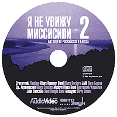
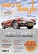

От продюсеров|
Автозвук 10/2004  |
|
Салон Audio Video 10/2004 |
ПОЧТИ 5 ЛЕТ ПРОШЛО С МОМЕНТА выхода первого сборника российского блюза "Я не увижу Миссиссиппи". На нем были собраны все лучшие достижения отечественного блюза, начиная еще с глухих времен застоя. Именно этим фактом объясняется ироничное название сборника - хороший блюз, выросший в отрыве от материнской дельты и не питающий надежды с ней когда-либо воссоединиться. За прошедшие годы очень многое изменилось. Ветераны вышли на другой профессиональный уровень, появилось несколько совсем новых интересных групп. Лучшие блюзовые силы, как ни странно, дала провинция. В Москве открылись новые клубы, где блюз чувствует себя естественно и раскованно. Каждый год проводятся крупные фестивали, приезжают западные звезды. Но, что самое главное - блюз из узко кастового искусства, понимание которого доступно лишь знатокам, стал (как ему изначально и положено) демократичной культурой, имеющей массовую аудиторию.
Достижения нашего блюза имеют конкретные имена. Сегодня это Арсен Шомахов с группой "Рэгтайм" (Нальчик), чьи работы можно считать новым словом в современном блюзе. Молодой Владимир Демьянов со своей командой Blues Doctors (Екатеринбург) демонстрирует великолепное чувство истинно блюзового вокала и гитары, достойное лучших американских образцов. Леван Ломидзе и Blues Cousins - суперпрофессионалы, покоряющие Америку своей фантастической энергетикой. Svet Boogie Band из Минска очень естественно демонстрируeт исключительное чувство стиля и эмоциональность традиционного блюза. Дуэт Братецкий - Кораблин и Dirty Dozen Юрия Каверкина удачно вторглись на не занятое у нас ранее поле черного дельта-блюза. Михаил Мишурис собрал в своем стильном "Оркестре" лучших профессионалов, и его концерты - это классное шоу с великолепным блюзово-свинговым звучанием.
В процессе работы над сборником мы поставили перед собой трудную задачу - отобрать преимущественно авторские сочинения. Как это ни удивительно, мы (а точнее, наши блюзмены) с задачей справились: собственные произведения имеются (а иногда и преобладают) в репертуаре многих групп. Пять лет назад такое, пожалуй, было бы невозможно. И это еще раз говорит о том, что наш блюз движется в правильном направлении, а стало быть, следующий сборник из данной антологии нужно будет назвать по-другому.
Редакция сайта BLUES.RU
Общее время звучания: 60:05 |
Сергей Воронов играет блюз уже 25 лет. Он джемовал с лучшими мастерами мирового блюза, стоял у истоков нескольких популярных отечественных рок- и блюз-коллективов, создал команду Crossroadz (www.crossroadz.ru), впервые выведшую русский блюз на мировую сцену. Песня "Blues Lives In Russia", открывающая наш сборник, написана более десяти лет назад, но ее пафос по-прежнему актуален: блюз в России (впрочем, как и везде) играют не ради денег и славы, а ради чего-то, что, наверное, можно определить понятием "душа". Воронов подтверждает это и словом, и делом: много лет являясь арт-директором первого московского клуба "B.B.King", помогает молодым музыкантам найти своего слушателя. В ближайшее время выходит документальный фильм о Crossroadz (режиссер А. Станкевич).
Гитарист/вокалист Арсен Шомахов и его группа Ragtime (arsenic.blues.ru, ragtime.blues.ru) из Нальчика в настоящий момент представляют собой одно из наиболее интересных явлений электрического блюза в России. Известность в российских блюзовых кругах музыканты приобрели совсем недавно, после появления на фестивале блюза "Дельта Невы" в Санкт-Петербурге и выпуска в 2002 г. альбома "Heavy Steppin'". Команде не пришлось долго завоевывать сердца "привередливых" столичных (и не только) меломанов - высокий профессионализм, мощный драйв, мелодичные вокальные линии и яркая гитарная импровизация, характерные для музыки Ragtime, сразу же были оценены по достоинству. Команда регулярно выступает в лучших московских клубах, а вышедший в сентябре 2003 альбом "Troublemaker" получил высокую оценку критиков и был включен в плей-листы зарубежных и отечественных радиостанций. Стиль группы - оригинальная смесь блюза, джаз-рока, и фанка - в последнее время приобрел заметную свинговую составляющую, что видно по композиции "Too Hot", которая войдет в готовящийся к изданию (возможно, на западном лейбле) третий альбом "Рэгтайма".
Группу Blues Doctors (bluesdoctors.narod.ru) создали в 1996 году ученики одной из школ Екатеринбурга. Волею судеб оказавшись в эпицентре уральского рока, "Блюзовые доктора" (тогда еще выступавшие под другим названием) смогли привить своим землякам любовь к традиционной афроамериканской культуре. Заручившись поддержкой видных свердловских рокеров (в том числе "ЧАЙФа"), группа под предводительством Владимира Демьянова выступала на всех местных фестивалях рок- и даже металлической музыки. Наконец настало время выйти и за пределы родного города - поработать в Германии, а затем блеснуть на питерском фестивале "Дельта Невы" (2002), московских фестивалях "Blues.ru", "Очаково-блюз" (2003). Сочетание традиций классического блюза чикагской школы и современного ритм-н-блюза - основа стиля Blues Doctors. Но, как видно по нашему сборнику (трек "Your Blues Doctor"), этим ребятам по зубам и зажигательный фанк! Дебютный альбом "Докторов" вышел в 2004 году на лейбле "Мистерия Звука".
J.A.M. (jam.blues.ru) расширяет блюзовую географию в глубь центральной России - группа появилась на свет в городе Арзамасе, что в Нижегородской области. Коллектив, образованный в 1988 году гитаристом и вокалистом Анатолием Морозовым, с 1995 года начал регулярно концертировать в Москве, а затем приобрел статус лидера клубной сцены и у себя в Нижнем. В 2002 г. вышел первый "полнометражный" альбом группы "Blues For My Babe" (2002). Нашим читателям J.A.M. уже знаком по первому сборнику "Я не увижу Миссиссиппи". Свой стиль музыканты определяют как "современный электроблюз, замешанный на традициях чикагского ритм-энд-блюза, британского блюз-рока и приправленный техасскими специями". Довольно плотный, "роковый" саунд J.A.M.а слегка смягчают классические тембры "Хаммонда", придающие звучанию некую загадочность.
Михаил Мишурис (www.mishouris.ru) - личность универсальная: он одинаково хорошо чувствует себя и в качестве солиста-вокалиста своего свингующего "Оркестра", и в качестве конферансье, ведущего блюзовых концертов и фестивалей. Представительная внешность, стильный костюм, набриолиненные волосы, превосходно поставленный сочный баритон - в 30-е годы Михаил прекрасно смотрелся бы каком-нибудь из клубов Чикаго, но сегодня он одна из самых ярких звезд московской блюзовой сцены, захваченной врасплох пульсирующим и драйвовым неосвингом Мишуриса. Элегантная "Sometimes I Wonder" написана и исполнена в дуэте с певицей Тамарой Кожекиной, которая не так давно собрала собственный коллектив Boogie Chillen.
В составе Blues Hammer Band со времен "Я не увижу Миссиссиппи 1" произошли изменения: ее покинул обладатель самой окладистой в отечественном блюзе бороды гармошечник Михаил Петрович Соколов, а на его месте появилась духовая секция в лице саксофониста Дмитрия Кондрашова. Основной композитор Blues Hammer Band - Николай Садиков, признанный мастер блюз-гитары, виртуозно владеющий слайдовой техникой, обладающий запоминающимся тембром голоса и характерной манерой пения. Музыку группы могли слышать люди, совершенно далекие от блюза, благо она звучала в телефильме "Нет спасения от любви", транслировавшемся на канале ТВС. А в сентябре 2004 года у команды выходит новый альбом "Charter Flight", демонстрирующий значительное расширение стиля - от психоделик-блюза до фанка.
Доктор биологических наук, преподаватель Московского университета Алексей Аграновский с блюзом дружит с юности - еще в конце 70-х на его квартире происходили подпольные концерты. Переиграв во множестве команд, в конце 90-х Доктор создал собственную группу "Черный хлеб", исполняющую как классические блюзы и спиричуэлз, так и собственные вещи на русском и английском языках. Текучесть состава не стала препятствием для записи "полнометражного" альбома "Тик" (2001), а Док меж тем совмещал практику с теорией - его "Словарь блюза" является одним из наиболее востребованных музыкальных текстов в "рунете". С расцветом нового блюзового движения Др. Аграновский становится одним из самых популярных ведущих московских джем-сейшнов, где выступает с полуакустическим составом Blues Spinners.
Московский бас-гитарист и контрабасист Джон Санчилло известен знатокам блюза по группе Blues Rhythm Section. Сегодня Джон реализует сольный проект, ориентированный на корневую негритянскую культуру, но при этом испытывающий и явное влияние современного готик-рок-андеграунда (да-да, вот такой "замес"!). Kомпозиция "Don't Stop The Blues" - это блюз с петлей на шее, исполняемый старым больным пьяным негром (Просьба принимать эту метафору как комплимент - Прим. авт.) в дымном и душном подвальном баре. Запись, стилизованная под звучание потертой граммофонной пластинки, усиливает апокалиптическое впечатление.
Svet Boogie Band (svet-al.blues.ru) - известная блюзовая группа из Беларуси (Минск), ставшая настоящим открытием прошлогоднего московского фестиваля "Очаково-блюз". Лидер группы - Свет, великолепный музыкант и неподражаемый шоумен, виртуозно владеющий старым стилем игры на пианино и гармошке, обладатель необычного блюзового голоса. Классические буги на honky-tonk-piano, гармошечные импровизации под перестук каблуков, не замутненная "архитектурными излишествами" гитарная акустика, - все дышит естественным очарованием, которое прекрасно передано и в записи (альбом "Happy With the Boogie", 2004), в том числе "живой" (как на нашем сборнике). Группа регулярно гастролирует в России.
Оспаривать авторитет "Лиги Блюза" на отечественной блюзовой сцене было бы бессмысленно. Именно этот коллектив в свое время доказал, что блюз на русском языке может быть таким же содержательным, как и на языке оригинала. Несмотря на то, что основатель и лидер "Лиги" Николай Арутюнов (www.arutunov.ru) в настоящее время увлечен другими стилями и проектами (в частности, сотрудничает с молодой фанк-командой Funk You), время от времени легендарная группа собирается и дает концерты.
Александр Братецкий (губная гармоника) и Владимир Кораблин (вокал, гитара) - молодые, но уже признанные в блюзовой среде музыканты. Их дуэт первоначально носил название Mississippi Twins, которое, в общем-то, говорит об исполняемой ими музыке всё, что только можно сказать. Обращаясь к корням блюза и интерпретируя хорошо известные мелодии в максимально аутентичном звучании, ребята ни на йоту не отступают от исторической правды и вместе с тем вносят в исполнение немалую долю собственной индивидуальности.
Юрий Каверкин прославился не только своим тонким и органичным
подходом к блюзовой гитаре, но и тем, что устраивал джем-сейшны...
в московском зоопарке! (Всё просто, Юрий - сотрудник администрации
этого учреждения и сам знатный зоолог.) Его новый проект Dirty
Dozen демонстрирует весьма глубокое проникновение в дебри Дельты,
но при этом - не без иронии: только не имеющий ушей не расслышит
в трактовке
Blues Cousins (www.blues-cousins.ru) - один из самых популярных коллективов столичной блюзовой сцены, ведомый зажигательным грузинским гитаристом Леваном Ломидзе. На сцене "Кузены" - просто ураган: сметают зал мощным потоком гитарных импровизаций и упругим шаффлом. Леван успешно прививает блюз на русскую почву: последний на данный момент студийный альбом Blues Cousins называется "Moscow Boogie" и повествует о нелегкой доле блюзмена в нашем отечестве. Не меньше, чем "огнеметные" скоростные композиции, Ломидзе удаются и лирические баллады, от которых тает женское сердце. Летом 2004 года Blues Cousins дали более пятидесяти концертов в Америке.
Modern Blues Band (http://www.modernbluesband.ru/) - еще один "московский грузинский" коллектив, организованный гитаристом Гией Дзагнидзе в 1995 году. До этого Гия играл в нескольких тбилисских командах, а затем переехал в Москву, где нашел и музыкантов-единомышленников, и благодарную публику. Группа исполняет энергичный электроблюз с вкраплениями рока и джаза. Среди композиций, вошедших в альбом "The Reverse Side of The Blues", отыскалась и авторская вещь "Boogie" - головокружительный гитарный инструментал, написанный не без влияния Стиви Рэя Воэна.
Подготовила Е. CАВИЦКАЯ
Фото: blues.ru, из архива музыкантов, С.Бабенко (Н.Арутюнов)